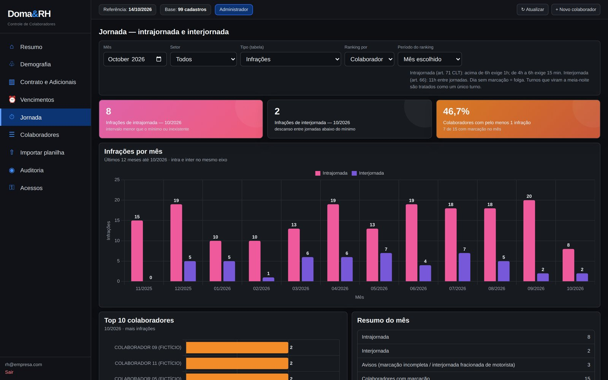
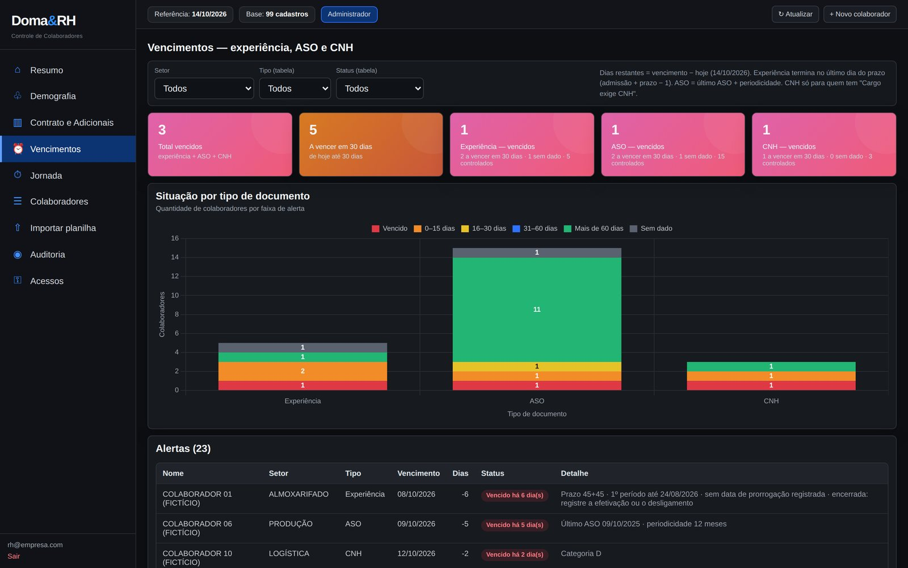

01 · Business case · Power Platform
Meus projetos dentro de um app
Um app em Power Apps que funciona como vitrine dos meus projetos, com os relatórios em Power BI rodando dentro dele, do jeito que alguém usaria no dia a dia.
Psicóloga que trabalha com dados. Uso a análise para entender pessoas e construo as ferramentas que tornam isso possível.

Um app em Power Apps que funciona como vitrine dos meus projetos, com os relatórios em Power BI rodando dentro dele, do jeito que alguém usaria no dia a dia.



Imagens com dados fictícios.
Headcount, turnover, demografia, vencimentos e jornada num só lugar, da importação da planilha ao indicador.
Ao limpar a base, o absenteísmo caiu de 6,09% para 3,88%: parte das faltas era de quem nem batia ponto.

Imagem com dados fictícios.
Entregas com assinatura do colaborador pelo celular, estoque, validade de CA e trilha de auditoria.

Carga validada em AdvPL e SQL, sem digitação manual.
A maior parte do meu código fica em repositórios privados, porque envolve dados de empresas. O gráfico mostra o ritmo de trabalho.

Minha formação é em Psicologia, com abordagem fenomenológico-existencial. Ela me ensinou a fazer as perguntas certas e a desconfiar de um número que não conversa com a realidade das pessoas.
No RH encontrei o terreno onde as duas coisas se juntam: transformar ponto, folha e cadastro em bases confiáveis e em leituras que orientam decisões.
Data Analytics, Machine Learning, SQL e Power Platform.
Dados de pessoas, indicadores e rotinas do ciclo do colaborador.
CRP · abordagem fenomenológico-existencial.

Treinamento e Desenvolvimento — Academia de Líderes